Instrumente utilizate în sănătatea publică: legislație și politici de sănătate
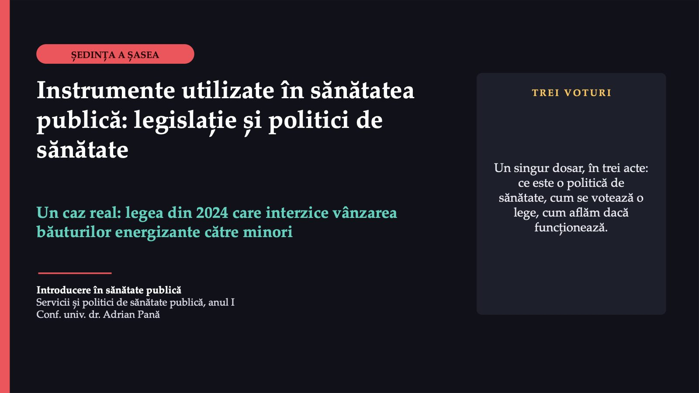
1 / 30Bună ziua. Azi urmărim un singur dosar real: legea din 2024 care interzice vânzarea băuturilor energizante către minori. Nu judecăm dacă legea este bună sau rea. Învățăm să o citim și să întrebăm ce dovezi s-au aflat în spatele ei.
Trei acte, un dosar real
 2 / 30
2 / 30Ședința are un singur caz, în trei acte. Aveți de învățat trei termeni noi: politica de sănătate, instrumentele de politică și ciclul politicii. Restul îl explicăm pe parcurs, când apare în dosar.
Actul întâi: problema
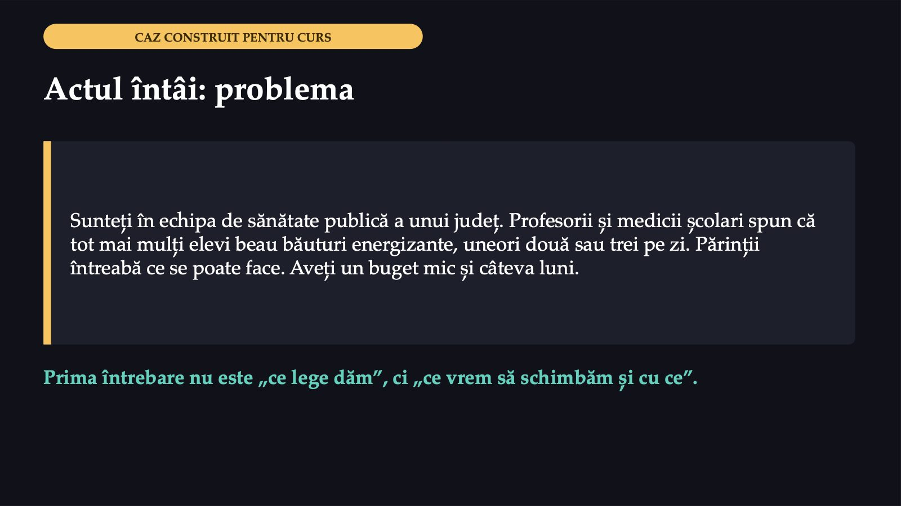
3 / 30Situația este construită pentru discuție și nu descrie un județ anume. Problema însă este reală: legea pe care o citim în actul al doilea a fost justificată prin creșterea consumului de băuturi energizante la minori.
Politica de sănătate
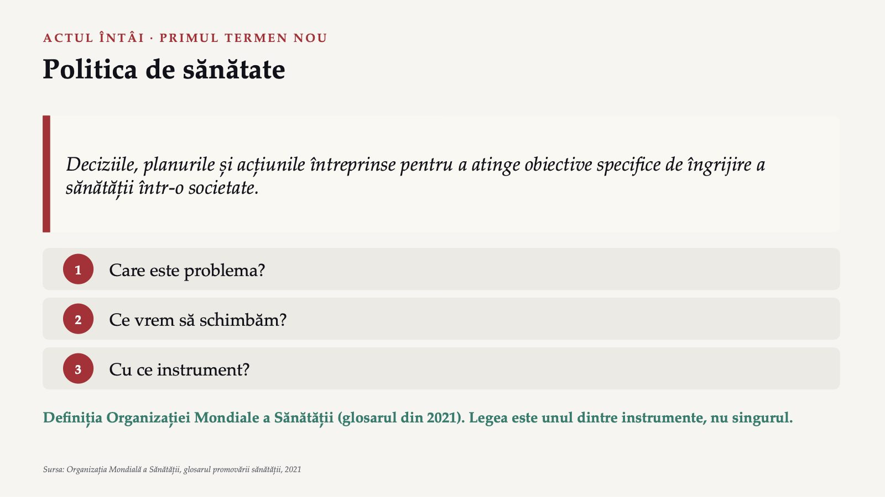
4 / 30Aceasta este definiția Organizației Mondiale a Sănătății din glosarul din 2021. Observați că ea privește îngrijirea sănătății. Politicile din alte sectoare, care influențează determinanții sănătății, țin în același glosar de abordarea numită „sănătatea în toate politicile”. Legea din cazul nostru se potrivește mai bine cu această a doua abordare. O politică răspunde la trei întrebări, în ordinea aceasta: care este problema, ce vrem să schimbăm, cu ce instrument.
Cu ce poate schimba statul un comportament
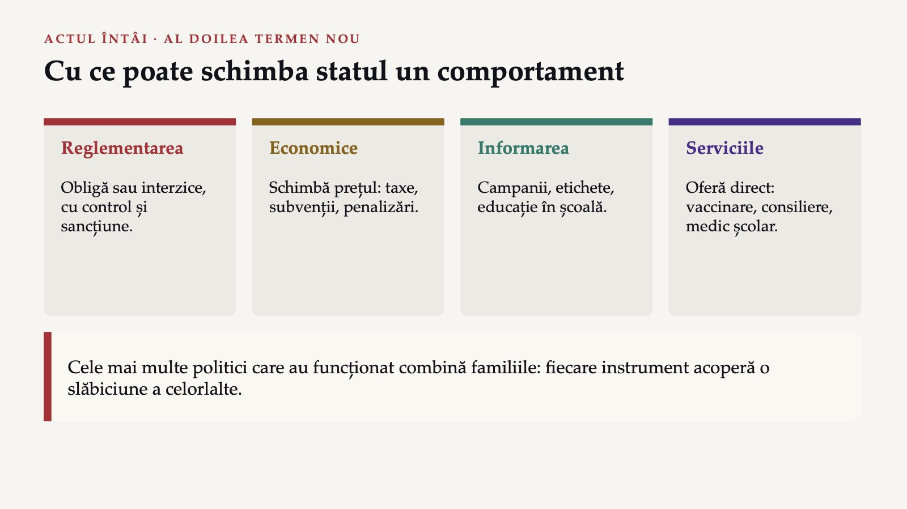
5 / 30Instrumentele de politică sunt patru familii. Reglementarea schimbă regulile pentru toată lumea, dar funcționează numai dacă cineva o aplică. Informarea este ieftină, dar nu schimbă nici prețul, nici accesul. Serviciile fac alegerea sănătoasă mai ușoară. Cele mai multe politici care au funcționat combină familiile.
Inițiativa SAFER a OMS pentru alcool
 6 / 30
6 / 30Un exemplu documentat de combinație este inițiativa SAFER a Organizației Mondiale a Sănătății, lansată în 2018. Ea reunește cinci intervenții pe care organizația le numește cele mai eficiente din punctul de vedere al costului. Recunoașteți familiile: reglementare, servicii și un instrument economic.
Patru tipuri de politici, după ce schimbă
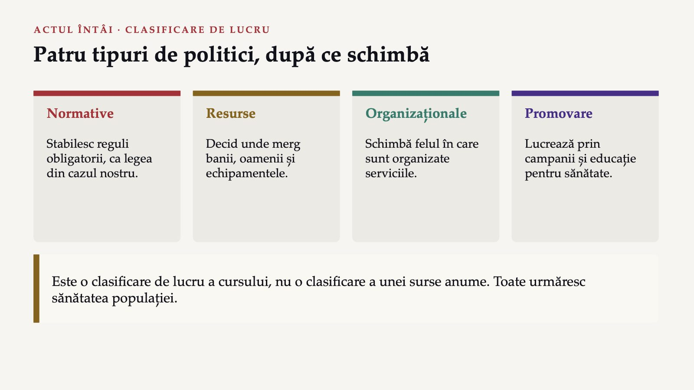
7 / 30O a doua împărțire privește ce schimbă politica, nu instrumentul ei. Este o clasificare de lucru a acestui curs. Toate cele patru tipuri urmăresc sănătatea populației.
Ce fel de acte normative există în România
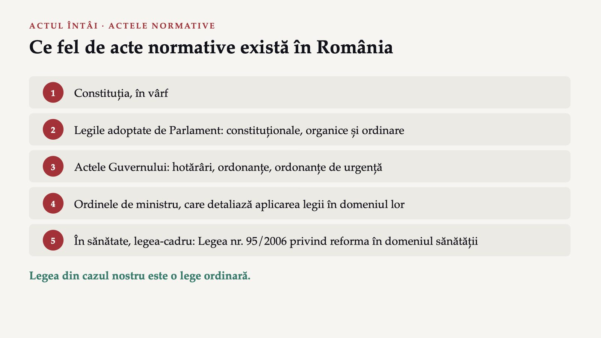
8 / 30Aceasta este harta de care avem nevoie ca să citim dosarul. În vârf se află Constituția. Parlamentul adoptă legi constituționale, organice și ordinare. Sub lege sunt actele Guvernului, iar mai jos ordinele de ministru. În sănătate, legea-cadru este Legea nr. 95/2006. Legea din cazul nostru este o lege ordinară.
Ce urmărește legislația de sănătate publică
![ACTUL ÎNTÂI · LEGEA NR. 95/2006 Ce urmărește legislația de sănătate publică Scopul Promovarea sănătății, prevenirea îmbolnăvirilor, îmbunătățirea calității vieții (art. 2). Promovarea sănătății Procesul prin care oamenii și comunitățile ajung să-și controleze și să-și îmbunătățească sănătatea; scop declarat: reducerea inechităților (art. 4). Funcțiile Supravegherea epidemiologică, prevenirea și controlul bolilor, reglementarea domeniului (art. 5). O regulă scrisă în lege se aplică tuturor celor vizați, în același fel; o recomandare nu o face.](diapozitive/C06/009.jpg) 9 / 30
9 / 30Legea nr. 95/2006 dă asistenței de sănătate publică un scop în trei părți: promovarea sănătății, prevenirea îmbolnăvirilor și îmbunătățirea calității vieții. Promovarea sănătății are în lege și un scop declarat, reducerea inechităților în sănătate. O regulă scrisă în lege se aplică tuturor celor vizați, în același fel.
Regulament sau directivă?
 10 / 30
10 / 30Tratatul enumeră actele pe care le adoptă instituțiile Uniunii. Diferența care contează cel mai mult este cea dintre regulament și directivă. Regulamentul se aplică direct și nu așteaptă o lege națională. Directiva fixează rezultatul, iar fiecare stat își adoptă propriile legi ca să-l atingă; spunem că directiva se transpune. Recomandările și avizele nu sunt obligatorii.
Vreți să scadă consumul de băuturi energizante la minori. Ce instrument alegeți întâi?
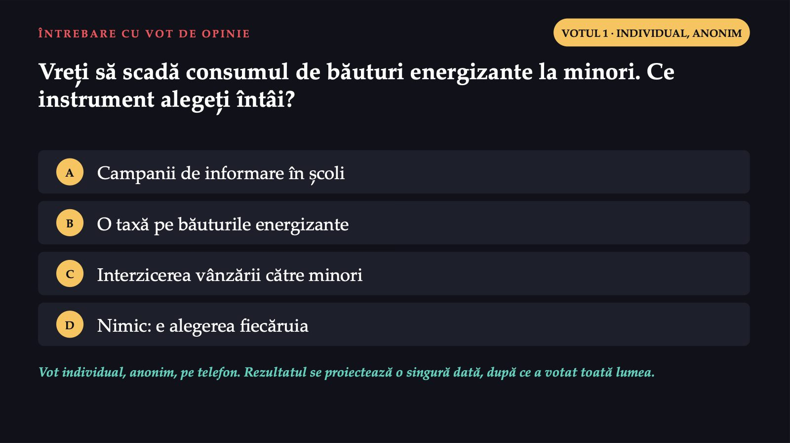
11 / 30Este un vot de opinie: fiecare variantă are argumente. Fiecare variantă este un tip de instrument. Rezultatul se proiectează o singură dată, după ce votează toată lumea.
Fiecare variantă are argumente
 12 / 30
12 / 30Nu există o variantă corectă. Cine alege informarea respectă regula proporționalității, dar trebuie să spună cum măsoară efectul. Taxa lucrează prin preț. Interdicția taie accesul, dar depinde de cine verifică vârsta. Autonomia are greutate la adulți, iar la minori slăbește. Legea reală a ales varianta C, fără o estimare verificabilă a problemei și fără un plan de evaluare.
Actul al doilea: dosarul
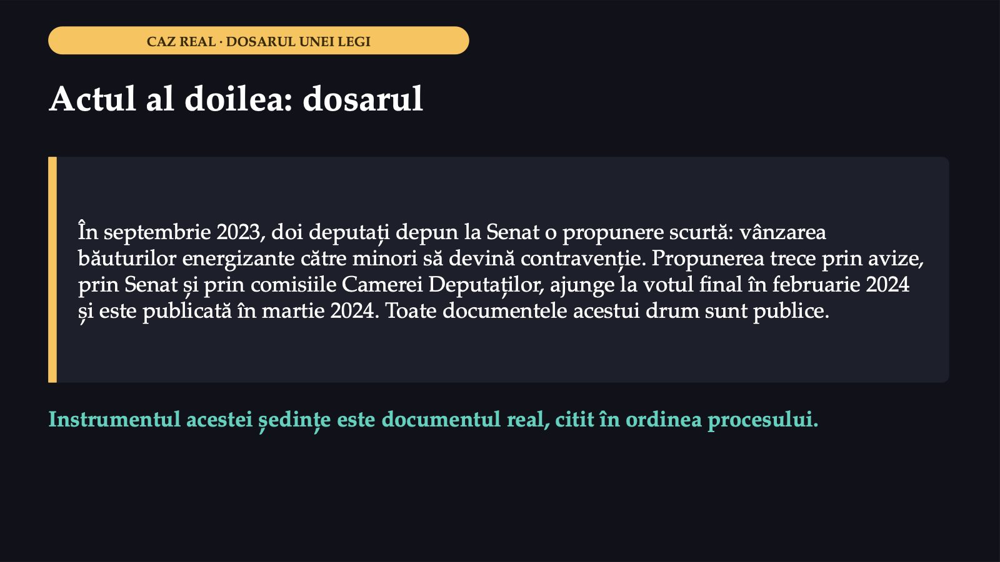
13 / 30Nu vă cer să învățați dosarul pe de rost. Vă cer să vedeți cum arată, concret, drumul unei legi și unde se pot căuta dovezile pe care s-a sprijinit.
Legea nr. 42/2024: ce spune
![ACTUL AL DOILEA · TEXTUL LEGII Legea nr. 42/2024: ce spune 1 Modifică Legea nr. 61/1991, lista contravențiilor de ordine publică și de conviețuire socială 2 Fapta nouă: vânzarea sau oferirea de băuturi energizante minorilor, inclusiv prin automate comerciale 3 Băutura energizantă: carbohidrați, vitamine, minerale, cu două sau mai multe substanțe stimulante, ca cofeina sau taurina 4 Publicată în Monitorul Oficial nr. 206 din 12 martie 2024 Sursa: portalul legislativ al Ministerului Justiției, textul Legii nr. 42/2024](diapozitive/C06/014.jpg) 14 / 30
14 / 30Observați că nu este o lege nouă, de sine stătătoare, ci o modificare a unei legi existente, cea care enumeră contravențiile de ordine publică. Așa se întâmplă des: legiuitorul adaugă o faptă nouă într-o listă deja existentă, cu sancțiunile ei.
De la propunere la Monitorul Oficial
![ACTUL AL DOILEA · DRUMUL LEGII De la propunere la Monitorul Oficial 1 11 septembrie 2023: propunerea, înregistrată la Senat (prima cameră) 2 12 septembrie 2023: trimisă la avize și la Guvern 3 Decembrie 2023: Senatul o adoptă tacit, prin depășirea termenului, fără vot 4 12 februarie 2024: raport favorabil, 8 amendamente admise 5 20 februarie 2024: votul final, Camera Deputaților 6 11 martie 2024: promulgarea (Decretul nr. 222/2024); 12 martie: publicarea Surse: fișele dosarului pe senat.ro (L578/2023) și cdep.ro (PL-x 827/2023)](diapozitive/C06/015.jpg) 15 / 30
15 / 30Aceasta este ordinea documentelor. Data adoptării tacite diferă între fișa Senatului și cea a Camerei Deputaților, iar legea publicată nu o menționează; de aceea pe diapozitiv apare numai luna. Cameră decizională înseamnă că votul ei este cel final.
Fiecare instituție răspunde la întrebarea ei
 16 / 30
16 / 30Trei instituții și-au dat părerea, fiecare din unghiul ei. Consiliul Legislativ a precizat că nu se pronunță asupra oportunității propunerii. Niciunul dintre avize nu judecă dacă legea va reduce consumul.
100–500 de lei
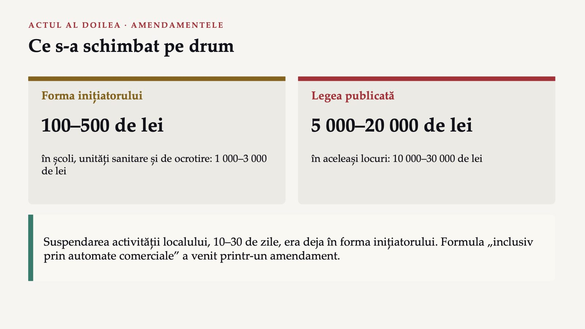
17 / 30Comparând forma inițiatorului cu legea publicată, vedem ce s-a schimbat pe drum. Amenda minimă a crescut de 50 de ori, iar cea maximă de 40 de ori; calculul este al nostru, pe cifrele din cele două documente. Amendamentul cu automatele arată de ce citim dosarul, nu doar legea: aparatul de pe holul școlii nu întreabă pe nimeni câți ani are.
Sunteți deputat, pe 20 februarie 2024. Votați legea?
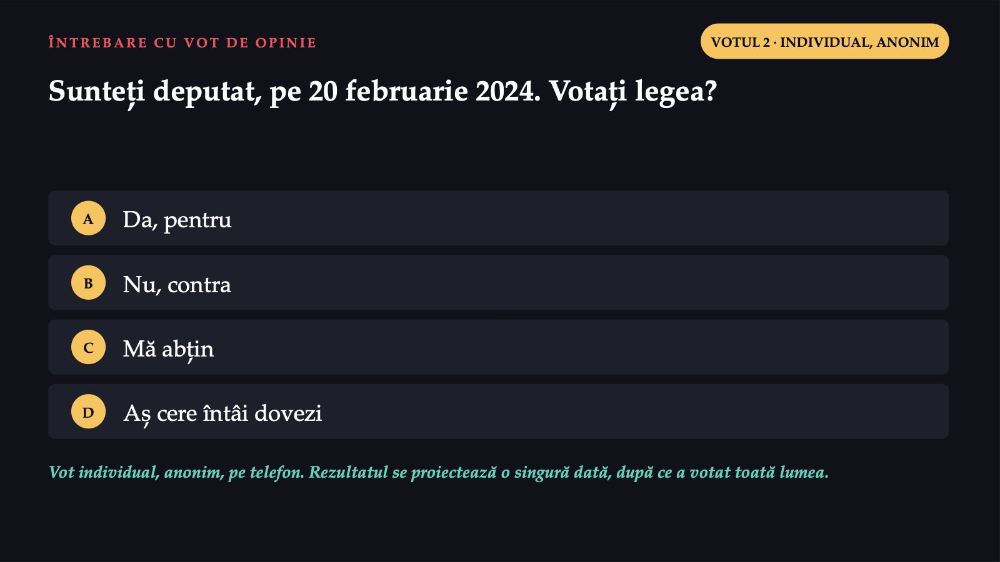
18 / 30Este un vot de opinie. Ați citit expunerea de motive și avizele. Rezultatul se proiectează o singură dată; apoi vedem cum s-a votat de fapt.
238
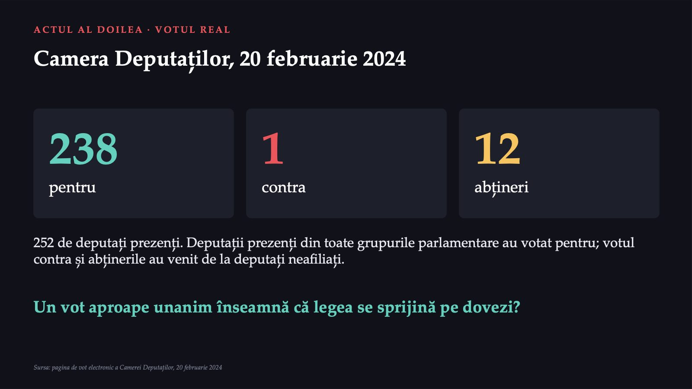
19 / 30La votul final au fost prezenți 252 de deputați: 238 pentru, unul contra și 12 abțineri. Unanimitatea arată un acord politic. Dovezile sunt altceva: date despre problemă, studii despre efectul măsurii, un plan de evaluare.
Ce nu găsim în dosar
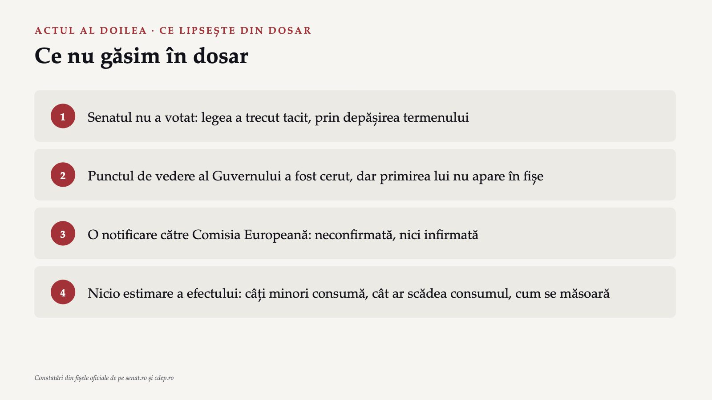
20 / 30Am citit toate documentele publice arhivate ale dosarului. Patru lucruri lipsesc, și tocmai ele ne interesează ca specialiști în sănătate publică. O eventuală notificare către Comisia Europeană nu este confirmată: nu putem spune nici că a existat, nici că nu a existat.
Actul al treilea: după vot
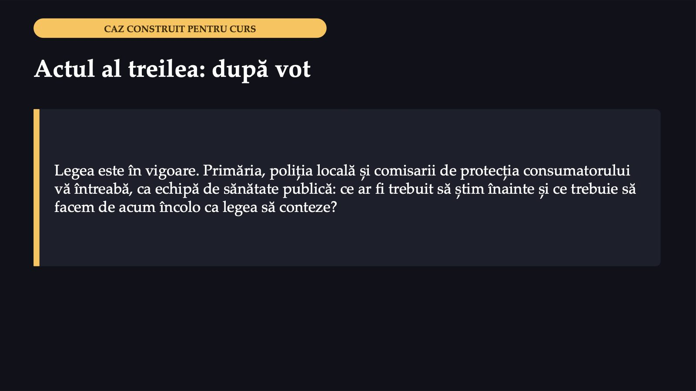
21 / 30Ajungem la actul al treilea. Legea este în vigoare, iar întrebarea nu mai este dacă s-a votat bine, ci ce dovezi lipseau și ce facem acum.
Ce dovezi ați fi cerut înainte de vot?
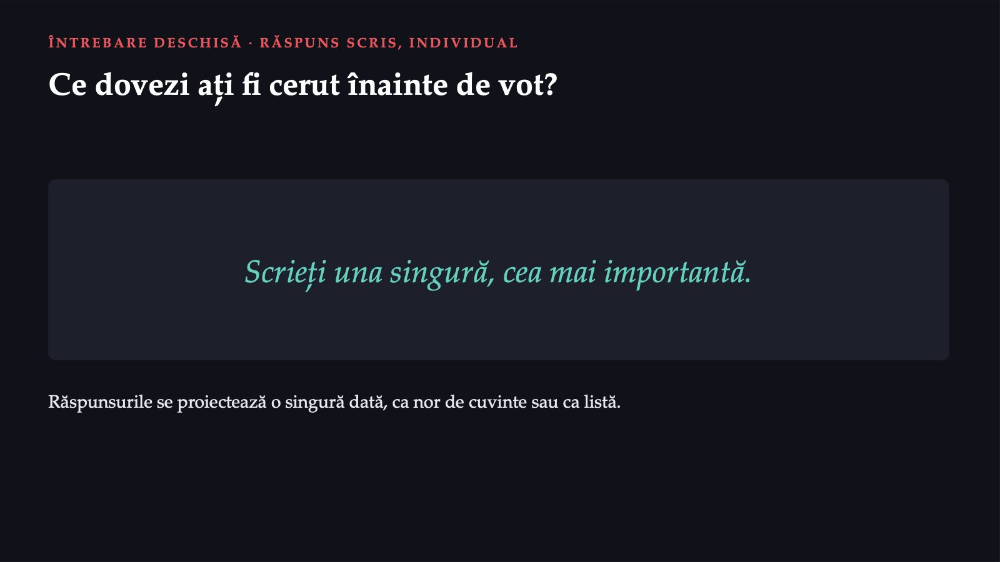
22 / 30Un singur răspuns, cel mai important. Nu există un singur răspuns, dar un specialist în sănătate publică ar fi cerut, de regulă, patru feluri de dovezi.
Patru feluri de dovezi
 23 / 30
23 / 30Studiul invocat de expunerea de motive ar fi fost un început, dacă ar fi fost citat complet, cu titlul și locul publicării. Datele invocate în plen sunt europene, nu românești, și au fost citate fără trimitere. Fără un plan de evaluare nu știm peste câțiva ani dacă legea a funcționat.
Ciclul politicii: un model didactic
 24 / 30
24 / 30Ciclul politicii este un model didactic al cursului, o simplificare. Ideea de ciclu apare însă și în documentele oficiale: manualul Organizației Mondiale a Sănătății din 2016 numește analiza situației un pas crucial al ciclului de planificare. Legea noastră se află în etapa aplicării. Nimeni nu a stabilit cum și când vor fi făcute monitorizarea și evaluarea.
Monitorizarea și evaluarea
![ACTUL AL TREILEA · DOUĂ CUVINTE CARE SE CONFUNDĂ Monitorizarea și evaluarea Monitorizarea Culegerea, urmărirea și analiza continuă a datelor: ce se întâmplă, unde și cui. Câte controale, câte amenzi, ce arată vânzările. Evaluarea Pornește de la datele monitorizării, dar analiza merge mult mai adânc: au fost atinse rezultatele dorite? A scăzut consumul din cauza legii? Monitorizarea vă spune dacă politica se aplică. Evaluarea vă spune dacă funcționează. Sursa: Organizația Mondială a Sănătății, manualul strategiilor naționale de sănătate, 2016](diapozitive/C06/025.jpg) 25 / 30
25 / 30Manualul Organizației Mondiale a Sănătății din 2016 deosebește cele două cuvinte. Monitorizarea înseamnă culegerea, urmărirea și analiza datelor. Evaluarea pornește de la datele monitorizării și merge mult mai adânc. Monitorizarea vă spune dacă politica se aplică, evaluarea vă spune dacă funcționează.
Ce ar face legea să funcționeze cu adevărat?
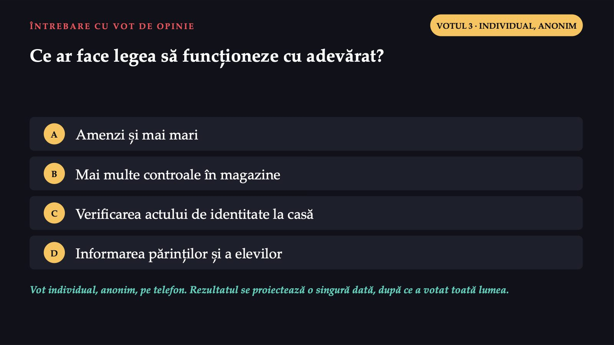
26 / 30Este un vot de opinie. Rezultatul se proiectează o singură dată, după ce votează toată lumea.
Ce a făcut legiuitorul mai târziu
![ACTUL AL TREILEA · APLICAREA Ce a făcut legiuitorul mai târziu 1 Legea nr. 233/2024 (Monitorul Oficial nr. 713 din 22 iulie 2024) a completat Legea nr. 61/1991 2 La servirea sau vânzarea acestor produse se cere consultarea actelor de identitate 3 Cine nu respectă obligația poate fi sancționat cu amendă de 10 000–30 000 de lei Documentele nu arată o legătură directă cu cererea din plen, de a le da vânzătorilor dreptul să legitimeze cumpărătorii. Sursa: portalul legislativ, forma consolidată a Legii nr. 61/1991, art. 2^1](diapozitive/C06/027.jpg) 27 / 30
27 / 30Potrivit portalului legislativ, forma consolidată a Legii nr. 61/1991 conține un articol nou despre servirea și vânzarea acestor produse. Cei care nu respectă obligația pot fi sancționați. În plen se ceruse ceva asemănător, dar documentele nu arată o legătură directă între cele două.
Securitatea și sănătatea în muncă
![PENTRU CURIOȘI · ALT DOMENIU Securitatea și sănătatea în muncă 1 Angajatorul asigură securitatea și sănătatea lucrătorilor în toate aspectele legate de muncă (Legea nr. 319/2006, art. 6) 2 Măsuri de prevenire a riscurilor, informare și instruire; fără obligații financiare pentru lucrători (art. 7) 3 Lucrătorii primesc informații despre riscuri și instruire la angajare și periodic; pot beneficia de supravegherea sănătății (art. 16, 20, 24–25) Aceleași întrebări: care e problema, ce instrument, cum aflăm dacă funcționează.](diapozitive/C06/028.jpg) 28 / 30
28 / 30Fișa disciplinei cere câteva domenii în care legislația este principalul instrument. Iată unul: securitatea și sănătatea în muncă. Legea nr. 319/2006 pune răspunderea pe angajator, iar lucrătorii primesc informații, instruire și pot beneficia de supravegherea sănătății.
Trei idei de luat acasă
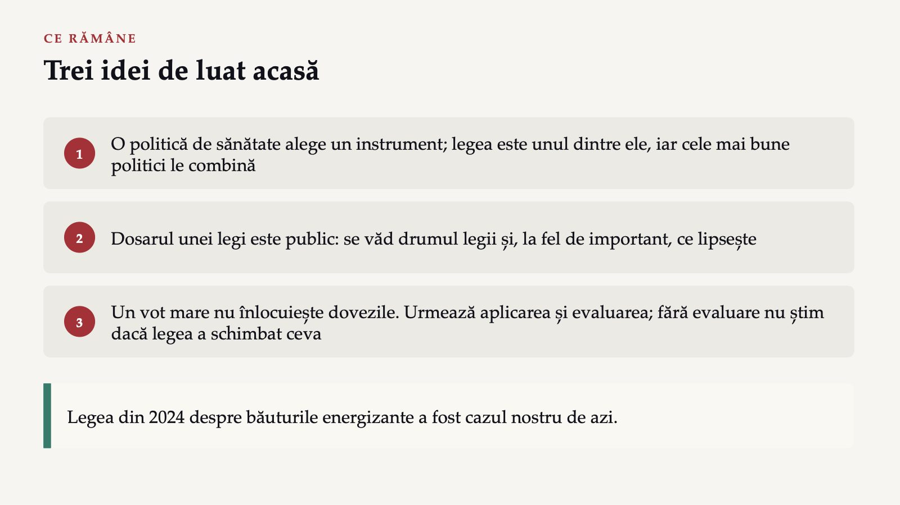
29 / 30Trei idei de luat acasă. O politică de sănătate alege un instrument, iar legea este doar unul. Dosarul unei legi este public și se poate citi, cu tot ce lipsește din el. Votul nu încheie politica: urmează aplicarea și evaluarea.
Trei întrebări pentru final
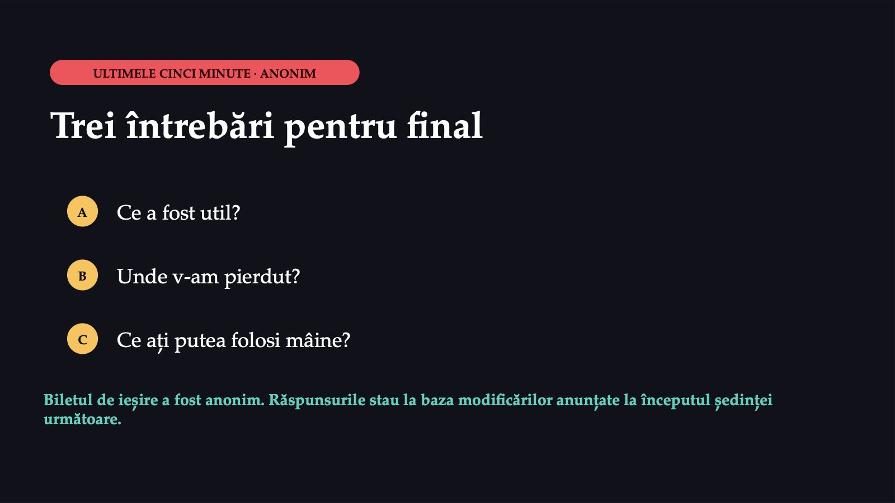
30 / 30Trei întrebări, anonim. Fără răspunsurile voastre nu pot ști ce să schimb.
Săgeți sau spațiu: navigare · O: vedere de ansamblu · N: notele prezentatorului · F: ecran complet · Esc: închidere